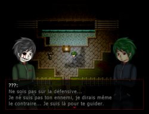

" Estradia est un jeu d'horreur narratif où le joueur incarne un jeune lycéen du nom de Kotaku. L'histoire démarre à Kyoto au Japon, de nos jours. Leiko, une lycéenne passionnée par le domaine de l'occulte et du paranormal entraîne ses quatre amis dans ce qui semble être une séance de spiritisme. Le groupe de jeunes se retrouve donc à la bibliothèque la plus proche de leur établissement scolaire afin de retrouver un vieux livre possédant des pouvoirs censés permettre la communication avec l'au-delà...
C'est après être passé à l'acte que le petit groupe se met à pâlir d'effroi en constatant que ce livre a bel et bien les capacités d'invoquer les esprits. Cependant cette vision d'horreur cessera peu de temps après... Du moins c'est ce que ces jeunes lycéens pensaient... C'est en rentrant chez lui, que Kotaku fit la rencontre d'une créature à l'aspect inquiétant. Il ne se remettra surement jamais de cette rencontre. Celui-ci se réveille peu de temps après dans ce qui semble être une salle de classe... Où est-il ? Où sont ses amis ? Dans quel enfer est-il tombé ? C'est à vous de répondre à ces questions en entraînant le jeune lycéen dans les méandres d'Estradia, l'île où le jour ne se lève plus."
Dans ce jeu, le joueur sera confronté à différentes énigmes ainsi que des phases de recherche. Pas de combat, pas de quêtes, ici ce sont vos capacités de réflexion et votre curiosité qui seront mises à l'épreuve ici. Le moindre recoin peut cacher un indice sur ce qu'il se passe réellement sur cette île. La moindre armoire, la moindre caisse, que ce soit dans la ville ou dans un appartement, tout peut vous mener vers la vérité... Ou vers quelque chose de bien plus sombre. Âmes sensibles, ce jeu est fait pour vous.
La règle d'or de ce Pixel Horror game est de vous fournir du frisson sans screamer visuel, ni audio parasite cherchant à nuire à votre audition, votre coeur, ou vous traumatiser visuellement en vous mettant une image déplaisante en tête à chaque fois que vous fermerez les yeux... Estradia se base uniquement sur son pixel art, sa bande audio spécialement choisie dans l'unique but de vous faire découvrir l'effroyable dédale de cet enfer.